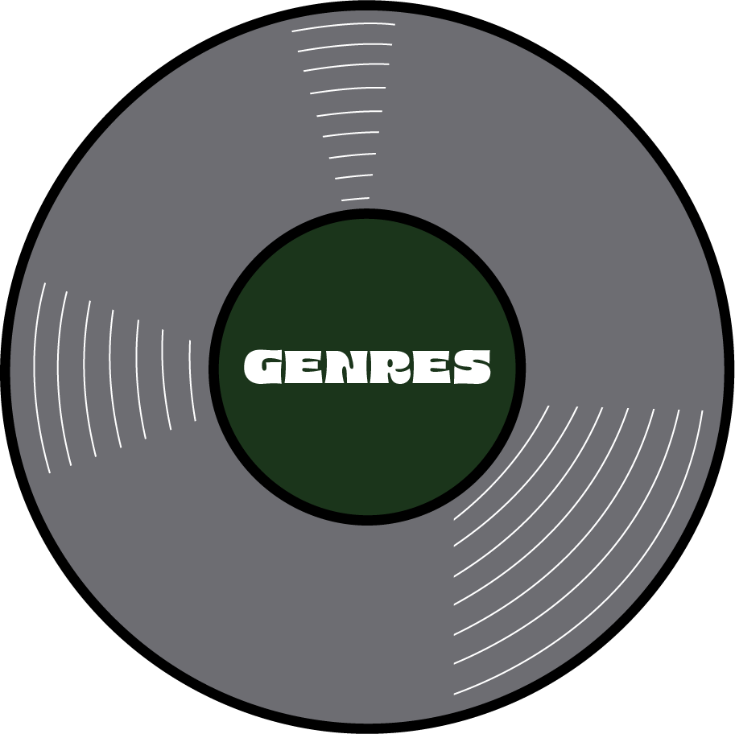
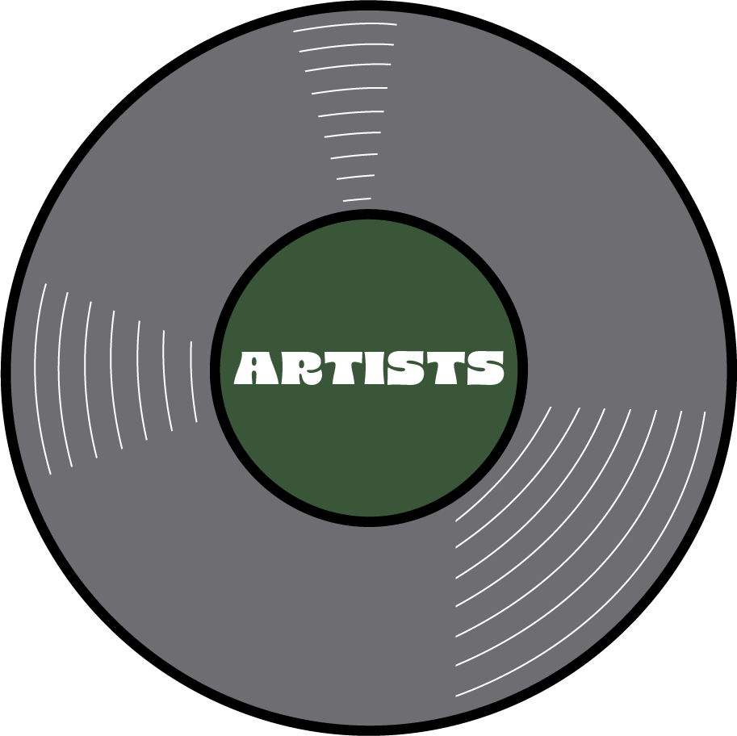
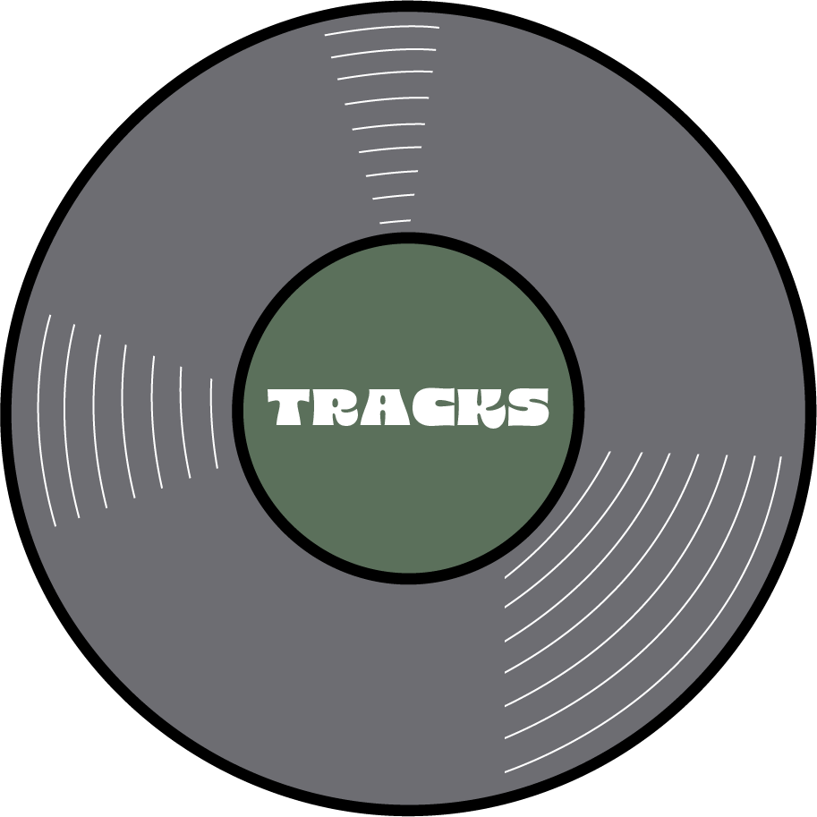

41% rap/hip hop; 9% r&b/soul; 8.2% funk/disco; 8.2% pop; 8.2% indie;
7.4% rock; 7.4% house/electronic; 6.6% folk/acoustic; 4% jazz

Of 60
artists, the top 3
most-listened-to were
Drake, Nicki Minaj, and Lil Wayne.

Of 122 tracks, the
most-listened-to song was
Truffle Butter.